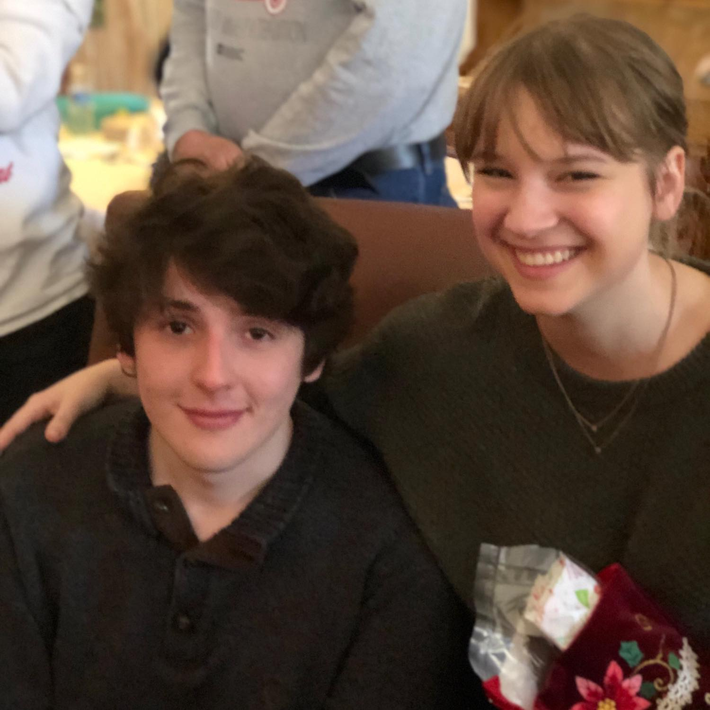

Facts About Me

Facts About Me

- Name
- Joshua Taylor Reed
- Hometown
- Corpus Christi, TX
- Alignment
- Chaotic Neutral
- Alma Mater
- Wesleyan University (still attending)
- Major
- Computer Science
- Minor
- Writing and Civic Engagement
- Favorite Restaurant
- Whataburger
- Favorite Movie
- Good Fellas or The Thing (1982)
- Favorite TV Show
- Avatar: The Last Airbender
- Favorite Video Game
- Doom (1993)
- Favorite Band
- Nine Inch Nails
- Favorite Song
- Reptile
- Favorite Book
- Death Be Not Proud
- Favorite Short Story
- Library of Babel
- Favorite Tabletop Roleplaying Game
- GURPS
- Favorite Ninja Turtle
- Donatello